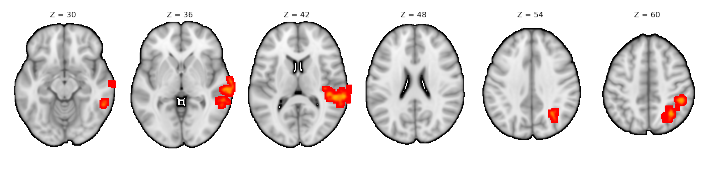
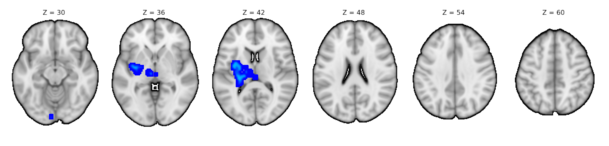
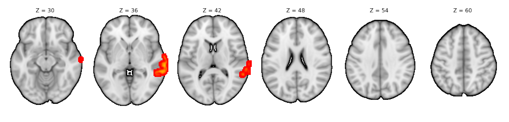
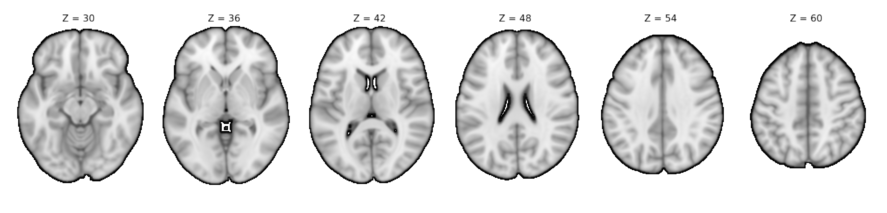
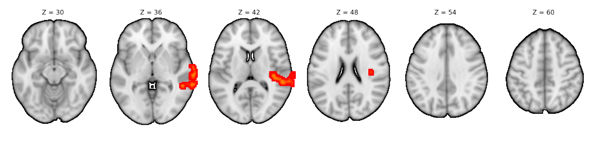
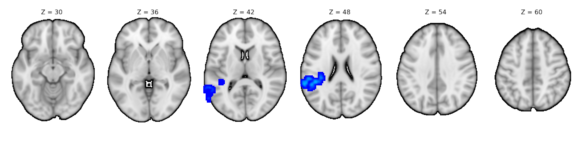

Project Preview
Welcome!
This project explores how the brain processes speech in individuals with schizophrenia, with a focus on the role of cognitive ability. Using functional MRI data, we examine whether differences in intelligence help explain variability in auditory cortex responses during speech perception.
Introduction
Schizophrenia affects approximately 1% of the global population and is often associated with hallucinations and delusions. However, one of its most persistent and disabling features is difficulty understanding spoken language, particularly in complex or noisy environments.
Speech perception depends on the auditory cortex, a brain region responsible for processing sound and language. Neuroimaging studies have shown reduced auditory cortex activation in individuals with schizophrenia compared to healthy controls. Interestingly, these reductions appear similar regardless of whether patients experience auditory hallucinations, suggesting that hallucinations alone do not fully explain speech-processing differences.
Beyond clinical symptoms, cognitive ability has been linked to performance on complex listening tasks in the general population. This raises a key question: does cognitive ability, rather than hallucination status, help explain variability in speech-related brain activity in schizophrenia?
To address this question, we analyzed a publicly available fMRI dataset from OpenNeuro, which includes individuals with schizophrenia and matched healthy controls. Participants listened to individual words, full sentences, and reversed speech while undergoing MRI scanning.
By comparing auditory cortex activation across speech conditions and IQ groups, this study investigates whether cognitive differences contribute to systematic variation in neural speech processing in schizophrenia.
Data Source
Data were obtained from OpenNeuro, a public repository for brain imaging research. The dataset includes 77 participants with demographic information (age, sex, IQ). For participants with schizophrenia who experience hallucinations, a clinical severity measure (PSYRATS-H) was also available.
Listening Tasks
During MRI scanning, participants completed three auditory tasks:
- Single words: unrelated spoken words
- Sentences: short spoken sentences
- Reversed speech: speech-like sounds without semantic meaning
Study Design
A block design was used, with each listening condition presented in randomized 26-second blocks. White noise served as a baseline between task blocks. The experiment lasted approximately 11 minutes. Audio was delivered through MRI-compatible headphones, and participants viewed a neutral gray screen throughout the task.
Brain Imaging
Functional brain images were collected using a 3-Tesla MRI scanner and processed using standard fMRI preprocessing and analysis techniques.
Methods
Preprocessing
Before analysis, the brain images went through standard cleanup steps to reduce noise and improve accuracy. This included correcting for small head movements, smoothing the images to reduce random variation, and removing slow signal drifts over time. Structural brain images were also processed to isolate brain tissue and align all participants’ data to a common brain template, making comparisons across people possible.
First-level Analysis
For each participant, we analyzed how brain activity changed during each listening task compared to the baseline. We used a statistical model that estimated brain responses to words, sentences, and reversed speech separately. Head motion was included in the model to prevent it from affecting the results. This step produced brain maps showing where activity increased or decreased during each task for each individual.
Second-level Analysis
Next, we combined data across participants to look for consistent patterns at the group level. We examined healthy controls and participants with schizophrenia separately, and also directly compared the groups. These comparisons accounted for differences in age, sex, and premorbid IQ. To ensure results were reliable and not due to chance, we applied standard statistical corrections used in brain imaging studies. Only clusters of brain activity that passed strict significance thresholds were considered meaningful.
Results






Conclusion & Future Work
- Main conclusion
- Next steps
Curious about the project? We’d love to chat. ☕️
Email: rnarwastu@ucsd.edu